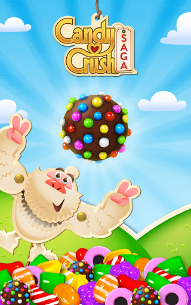

|  | In Candy Crush Saga ga je op avontuur met Tifi en meneer Toffee in een wereld die gevuld is met snoep. Want voor als je het niet wist, deze game heeft een verhaal. Niet echt een groot verhaal, maar wel een verhaal. Candy Crush bevat sowieso meer dan 8000 levels die je kunt spelen en deze gaan stuk voor stuk over snoep. Het idee is van de levels is simpel: combineer minimaal drie dezelfde snoepjes en ze verdwijnen van het veld. Door bijvoorbeeld vier snoepjes te combineren krijg je een gestreept snoepje die een hele rij wegspeelt. Ook kan je een explosief snoepje te maken dat alles eromheen vernietigt. Als laatste kan er een koekje gemaakt worden dat alles in de gewenste kleur laat verdwijnen. In het begin van het avontuur zullen deze snoepjes niet belangrijk zijn, na een paar levels zullen ze heel belangrijk zijn. Ieder level heeft een bepaald doel. Bijvoorbeeld een bepaalde score halen binnen een bepaalde tijd, maar het komt ook vaak voor dat je gelatine blokken weg moet halen of een aantal kersen en nootjes naar beneden moet halen om ze in de onderste rij te laten verdwijnen. Voor al deze doelen heb je vaak een gelimiteerd aantal zetten beschikbaar. Op een gegeven moment komen in de levels chocolade die zich als een vreselijk virus door een level verspreid en snoepjes ontoegankelijk maakt. Uiteindelijk krijg je ook met bommen te maken die je zo snel mogelijk weg moet spelen. Lukt dat niet ben je een leven kwijt. Je hebt steeds maar vijf levens en als deze op zijn moet je dus wachten op nieuwe. Omdat je sommige levels steeds net niet haalt gaan je levens soms behoorlijk snel op. Dan moet je dus weer wachten op nieuwe levens. Dit proces kan behoorlijk frustrerend zijn en komt het hele spel terug. Je kan wel je Facebook vrienden om levens vragen. Doordat de game een eenvoudig concept heeft met een simpel begin en een uiteindelijk snel stijgende moeilijkheidsgraad is het een toegankelijke game voor beginners. De game oogt leuk en is uitermate geschikt om even te spelen als je onderweg bent of maar even hebt. Er is dan eigenlijk ook niets op de game aan te merken behalve het feit dat het soms frustrerend kan zijn om vast te lopen. Ik zou het spel zeker aanraden. |